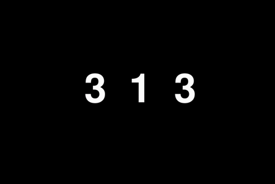
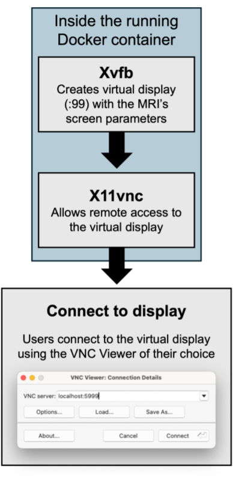
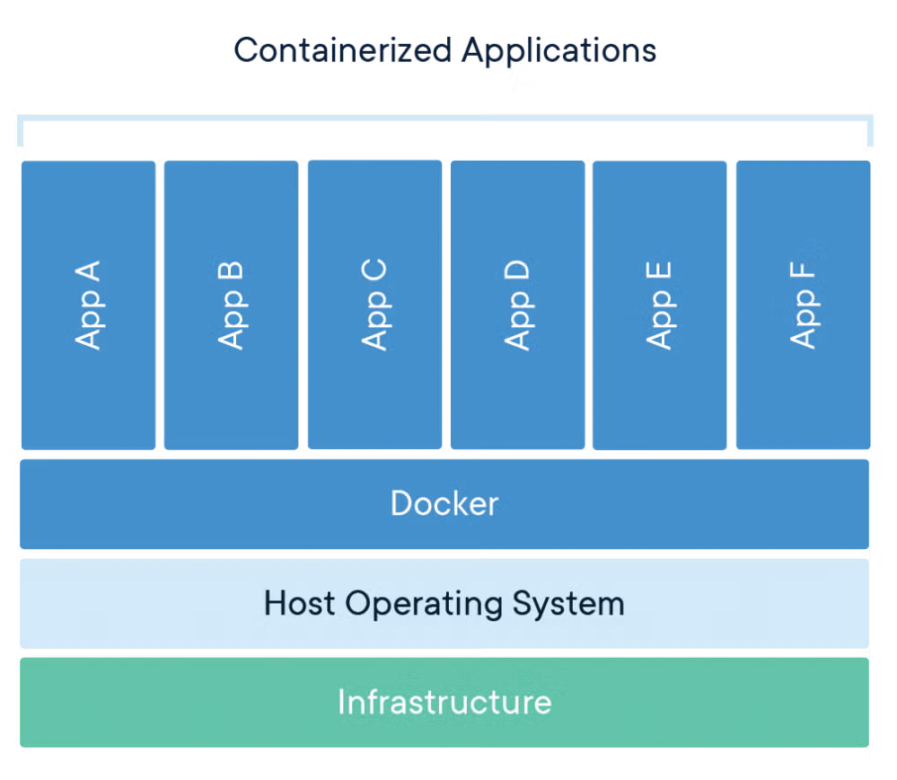
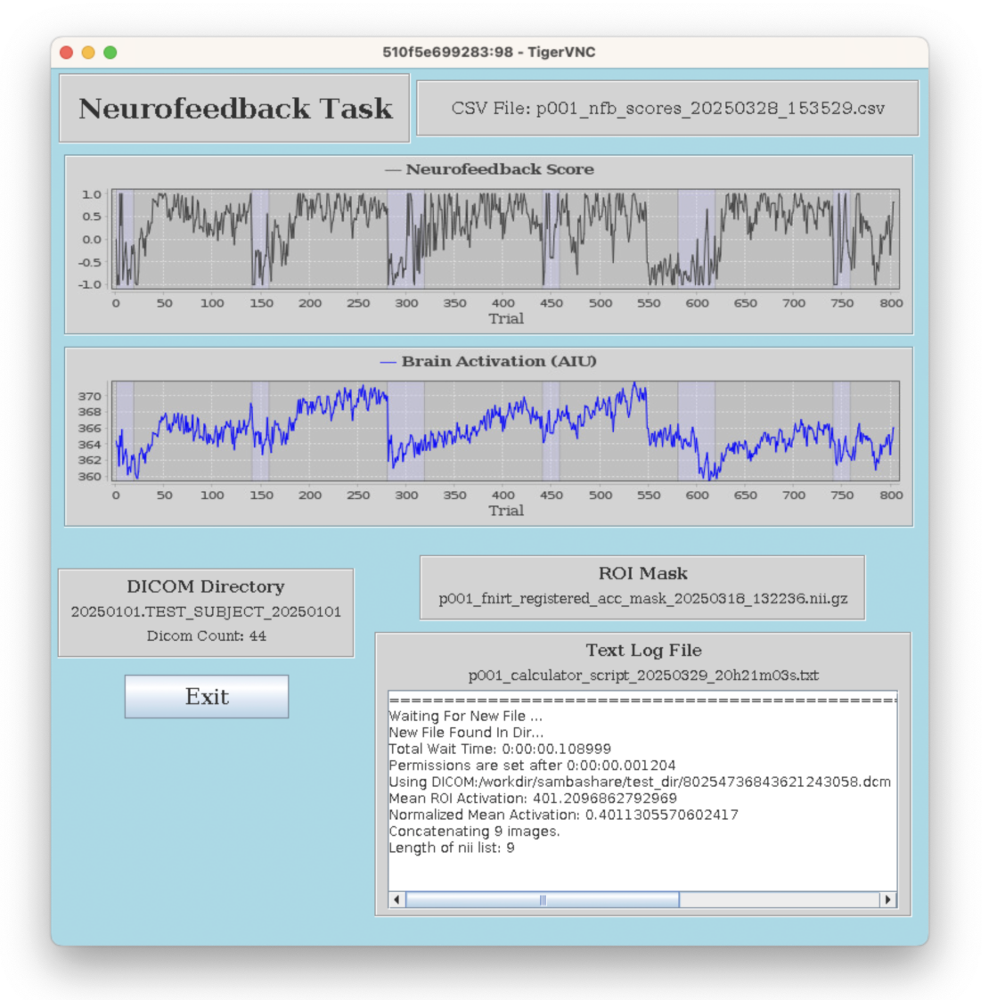
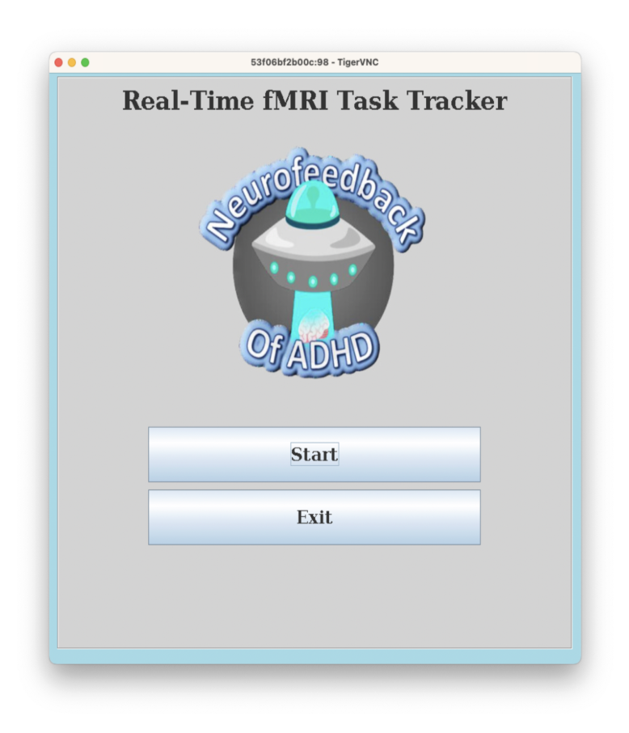

TO VIEW ALL ELEMENTS, PLEASE VIEW ON A LARGER SCREEN
One driving principle of neuroscience is plasticity, the brain's ability to modulate neural activity
and connections in temporary and permanent ways. This process can be co-opted through neurofeedback, which presents
an individual's own neural signals back to them to create neural and behavioral changes.
fMRI neurofeedback (fMRI-NF) offers direct evidence of neuromodulation efficacy but is hindered by complex technical barriers.
I developed a user-friendly containerized real-time fMRI-NF protocol for Siemens (XA30) MRI scanners which
facilitates the acquisition, processing, localization, and task and feedback display with low CPU/memory requirements.
This project has been featured in a number of awards and grant submissions:
Steve Samuels & Ami Cipolla Innovation Pilot Grant
Optimizing Real-time fMRI Neurofeedback to Improve Sustained Attention in ADHD
Boston Children's Hospital | April 2024
A one-year, $100,000 pilot grant funding innovative research projects exploring
neurobiological mechanisms of attention and anxiety and offering translational
potential to develop new biomarkers or therapeutic strategies
for conditions like ADHD.
Development and Implementation of a Portable Real-Time fMRI Neurofeedback Protocol
Georgia Institute of Technology | May 2025
A $500 travel award to present this work InterfaceNeuro, an interdisciplinary neurotechnology
conference focused on advancing brain-body-machine interfaces.
Disentangling Stimulant-Induced Head Motion Reduction from Neural Signatures of Treatment Response in ADHD
National Institutes of Health (NIH) | February 2026
A multi-year R01 grant submission investigating how psychostimulant medications
modulate brain networks in ADHD using pharmacological fMRI and slice-based motion correction.
Our system utilizes a series of Docker containers controlled by
a simple Command Line Interface, allowing experimenter control with no
manual configuration, which can:
Run Tasks to Localize Attentionally-Implicated Brain Regions
and Measure Attention
MSIT Task
(Bush & Shin 2006): The
MSIT Task
activates attentional regions, namely the Anterior Cingulate Cortex, or ACC.
For control trials, the paired digits are zero and the position of the target digit
corresponds to its location. For interference trials, the distractor
digits are non-zero and the target digits location is not the same as its
value.

During the MSIT task, participants must choose the number that is
different from the other two. (Ex. Press '1' if the numbers are '212')
Stop/Signal Task
A go/no-go task where participants must press a
button when they see a cartoon astronaut and refrain
from pressing a button when they occasionally see a cartoon bear.
Tasks of this nature, which require participants to inhibit a response,
has been shown to heavily involve the Right Inferior Frontal Gyrus, or RIFG
(Rubia et al. 2003).
During the RIFG task, participants must not press the button
when they see the bear. They must press the button when
they see the astronaut.
Register Atlas Region of Interest (ROI) Masks to Subject-Space
in Real-Time using either EasyReg or FSL
EASYREG SCRIPT
Through a series of scripts
involving the transfer of files to/from Boston Children's High
Performance Computing cluster (e3) and a local Docker container,
an MNI-space mask is registered to a participant's brain using
FreeSurfer's
EasyReg
,
a machine learning tool for registration of brain MRI.
Using FSL's
FNIRT
and
FLIRT
tools, this script registers ROI masks to a
participant's brain. It's process includes DICOM to NifTi conversion,
skull-stripping and mask creation, affine and nonlinear registration, as
well as mask binarization. A registration pipeline that is able to be ran
locally instead of HPCs.
Anterior Cingulate Cortex (ACC) Mask
The mask is intentionally enlarged to define a broader search range
within which the localizer identifies a participant's specific
ACC location.
Right Inferior Frontal Gyrus (rIFG) Mask
The mask is intentionally enlarged to define a broader search range
within which the localizer identifies a participant's specific
rIFG location.
Localize Regions of Interest (ROI)
The localizer script aims to localize and a create mask of a brain region
(within a given area) based on activation from either the MSIT task or RIFG task.
It several steps including: preprocessing data, computing task-related activation
maps using GLM (General Linear Model) analyses, and mask creation via a watershed algorithm.
It also allows the experimenter to choose the threshold activation level for voxels included
in the outputted mask via visualization in FSLeyes.
A real-time neurofeedback task where individuals
in the scanner are shown their brain activity in an attention-related
brain region of interest, either Anterior Cingulate Cortex (ACC)
or Right Inferior Frontal Gyrus (RIFG), via a rocket going into a portal.
If that brain region becomes more active (i.e. the participant is paying
attention more), the rocket gets closer to the portal. If that brain region
becomes less active, the rocket gets further from the portal.
NEUROMODULATION
In the associated study, we focus on upregulating regions of interest
(ROIs) that are most active during stimulant use, such as the Right Inferior Frontal Gyrus (Rubia et al. 2014).
By providing feedback to individuals based on these targeted ROIs, our goal is to mimic the normalized neural
effects of stimulants without the associated side effects.
Display Tasks via a Containerized Virtual Display

Containerized in Docker
From running fMRI task protocols to data visualization and analysis,
Docker can streamline neuroscientific workflows
Researchers can share Docker images, enabling collaborators to run
identical setups without manual configuration
Our images allow us to simplify complex fMRI neurofeedback software and protocols,
limit manual installation and configuration, and provide a consistent runtime environment
to run real-time experiments.

Provide immediate feedback on participant performance to
experimenters via Graphical readout
A java-based graphical interface,
containerized in a Docker image, can
graph brain activation and task performance
in real-time while showing task
parameters and logs as they are updated.


Transfer DICOMs Via a Containerized OS-Agnostic Samba Sharing Server
DICOMs are transfered via a containerized, OS-agnostic, Samba/SMB sharing
server to receive DICOM data transmitted from Siemens (XA30) MRI scanners
with no manual configuration.
About The Ongoing Experiment
I built this pipeline with the goal of creating a reusable tool. It has since been handed off to
another coworker for data collection toward the following project:
Our study will explore whether neurofeedback can replicate or enhance the effects of stimulant medications
in individuals with ADHD. By comparing brain activity and performance on attention tasks during neurofeedback
and stimulant conditions, we aim to determine if neurofeedback can serve as an alternative or complement to
stimulants in managing ADHD symptoms. This investigation will contribute to the literature by evaluating the
potential of neurofeedback to replicate or amplify the benefits typically associated with stimulant treatments,
without the side effects associated with stimulant drugs. By addressing the impact of motion artifacts and
investigating the effects of neurofeedback compared to stimulant medications, our study seeks to refine neuroimaging
techniques and expand the understanding of ADHD treatment options. If neurofeedback can replicate or amplify the
effects of stimulants on brain activity and attention, it may offer a promising, non-invasive treatment with fewer
side effects. Ultimately, this research has the potential to advance both methodological practices in ADHD research
and therapeutic approaches for individuals with the condition.
Citations
Bush, G., Shin, L. The Multi-Source Interference Task: an fMRI task that
reliably activates the cingulo-frontal-parietal cognitive/attention network.
Nat Protoc 1, 308–313 (2006).
https://doi.org/10.1038/nprot.2006.48.
Rubia K, Alegria AA, Cubillo AI, Smith AB, Brammer MJ, Radua J. Effects of stimulants on
brain function in attention-deficit/hyperactivity disorder:
a systematic review and meta-analysis. Biol Psychiatry. 2014;76(8):616-628.
https://doi.org/10.1016/j.biopsych.2013.10.016
Rubia K, Smith AB, Brammer MJ, Taylor E. Right inferior prefrontal cortex mediates
response inhibition while mesial prefrontal cortex is responsible for error detection.
Neuroimage. 2003 Sep;20(1):351-8.
https://doi.org/10.1016/s1053-8119(03)00275-1.
PMID: 14527595.